Optimisation Multi-Critères
Pascal Obstétar
2026-01-09
Source:vignettes/multi-criteria-optimization_fr.Rmd
multi-criteria-optimization_fr.RmdIntroduction
La gestion forestière durable nécessite souvent d’équilibrer des objectifs multiples et potentiellement conflictuels : production de bois, conservation de la biodiversité, services récréatifs, séquestration du carbone, etc.
Cette vignette présente les outils d’optimisation
multi-critères du package nemeton (v0.4.0) :
- Analyse de Pareto : Identifier les solutions non-dominées (optimales)
- Clustering : Regrouper les parcelles selon leurs profils multi-familles
- Trade-off Analysis : Visualiser les compromis entre objectifs
1. Analyse de Pareto Optimality
Concept
Une parcelle est Pareto-optimale (non-dominée) si aucune autre parcelle n’est strictement meilleure sur tous les objectifs simultanément. Ces parcelles forment la frontière de Pareto - l’ensemble des meilleures solutions possibles où améliorer un objectif nécessite de dégrader au moins un autre.
Identifier les Parcelles Pareto-Optimales
# Exemple 1: Maximiser Carbon (C), Biodiversité (B), et Production (P)
result_pareto <- identify_pareto_optimal(
massif_demo_units_extended,
objectives = c("family_C", "family_B", "family_P"),
maximize = c(TRUE, TRUE, TRUE)
)
# Combien de parcelles sont Pareto-optimales ?
table(result_pareto$is_optimal)
#>
#> FALSE TRUE
#> 13 7
# Quelles parcelles sont optimales ?
result_pareto |>
sf::st_drop_geometry() |>
filter(is_optimal) |>
select(name, family_C, family_B, family_P, is_optimal)
#> name family_C family_B family_P is_optimal
#> 1 Parcel_01 94.92197 44.14061 47.68739 TRUE
#> 2 Parcel_02 75.51266 17.71910 86.78162 TRUE
#> 3 Parcel_03 79.05953 56.77938 46.78139 TRUE
#> 4 Parcel_05 85.85022 44.31909 75.19072 TRUE
#> 5 Parcel_07 69.72693 93.35580 86.90201 TRUE
#> 6 Parcel_08 73.31753 64.45627 51.09994 TRUE
#> 7 Parcel_09 16.81178 35.13385 90.63200 TRUEVisualisation Spatiale
# Cartographier les parcelles Pareto-optimales
ggplot(result_pareto) +
geom_sf(aes(fill = is_optimal), color = "white", size = 0.5) +
scale_fill_manual(
values = c("gray70", "red"),
labels = c("Non-optimal", "Pareto-optimal"),
name = "Statut"
) +
labs(title = "Parcelles Pareto-Optimales (C, B, P)") +
theme_minimal()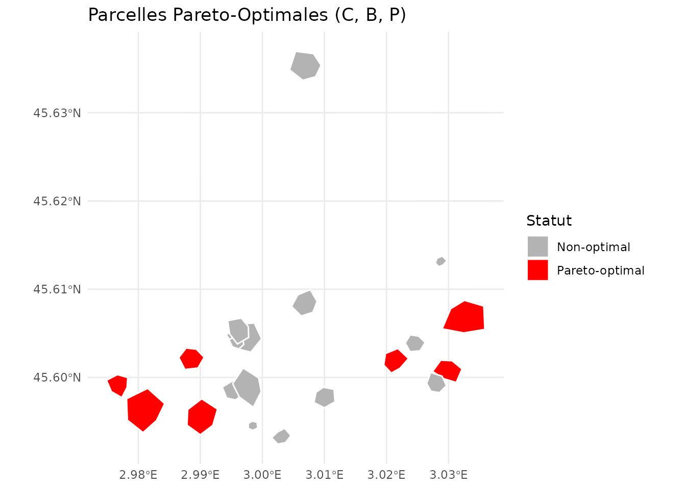
Objectifs Mixtes (Maximisation + Minimisation)
# Exemple 2: Maximiser C et B, Minimiser Risque incendie (R1)
result_mixed <- identify_pareto_optimal(
massif_demo_units_extended,
objectives = c("family_C", "family_B", "R1"),
maximize = c(TRUE, TRUE, FALSE) # Minimiser R1
)
table(result_mixed$is_optimal)
#>
#> FALSE TRUE
#> 14 6
# Profil des parcelles optimales
result_mixed |>
sf::st_drop_geometry() |>
filter(is_optimal) |>
select(name, family_C, family_B, R1, is_optimal)
#> name family_C family_B R1 is_optimal
#> 1 Parcel_01 94.92197 44.14061 1 TRUE
#> 2 Parcel_03 79.05953 56.77938 2 TRUE
#> 3 Parcel_05 85.85022 44.31909 3 TRUE
#> 4 Parcel_07 69.72693 93.35580 4 TRUE
#> 5 Parcel_08 73.31753 64.45627 2 TRUE
#> 6 Parcel_12 65.68338 88.53671 1 TRUE2. Clustering de Parcelles
K-means Clustering
Le clustering K-means regroupe les parcelles ayant des profils similaires sur plusieurs familles d’indicateurs.
# Clustering avec k=3 prédéfini
result_kmeans <- cluster_parcels(
massif_demo_units_extended,
families = c("family_C", "family_B", "family_P", "family_S"),
k = 3,
method = "kmeans"
)
# Distribution des clusters
table(result_kmeans$cluster)
#>
#> 1 2 3
#> 8 4 8
# Profil moyen de chaque cluster
profiles <- attr(result_kmeans, "cluster_profile")
print(profiles)
#> family_C family_B family_P family_S
#> 1 70.64928 36.67757 49.25494 29.92551
#> 2 32.69497 63.34291 81.12851 36.32015
#> 3 61.99780 60.78833 50.53400 66.00966Visualisation des Clusters
# Carte des clusters
ggplot(result_kmeans) +
geom_sf(aes(fill = factor(cluster)), color = "white", size = 0.5) +
scale_fill_viridis_d(name = "Cluster") +
labs(title = "Clusters K-means (k=3) sur C, B, P, S") +
theme_minimal()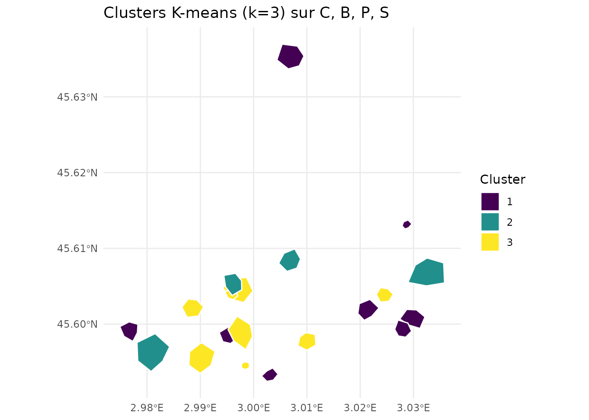
Auto-détermination du K Optimal
Utiliser l’analyse de silhouette pour trouver automatiquement le nombre optimal de clusters :
# Laisser l'algorithme déterminer k optimal
result_auto <- cluster_parcels(
massif_demo_units_extended,
families = c("family_C", "family_B", "family_P", "family_S"),
k = NULL, # Auto-détermination
method = "kmeans"
)
# K optimal déterminé
optimal_k <- attr(result_auto, "optimal_k")
print(paste("K optimal:", optimal_k))
#> [1] "K optimal: 9"
# Scores de silhouette pour chaque k testé
silhouette_scores <- attr(result_auto, "silhouette_scores")
print(silhouette_scores)
#> 2 3 4 5 6 7 8 9
#> 0.2125173 0.2275088 0.2391278 0.2554618 0.2220507 0.2423108 0.2588862 0.2698886
#> 10
#> 0.2556270
# Visualiser les scores de silhouette
k_values <- as.integer(names(silhouette_scores))
plot(k_values, silhouette_scores,
type = "b", pch = 19, col = "blue",
xlab = "Nombre de clusters (k)",
ylab = "Score de silhouette moyen",
main = "Détermination du K Optimal")
abline(v = optimal_k, col = "red", lty = 2)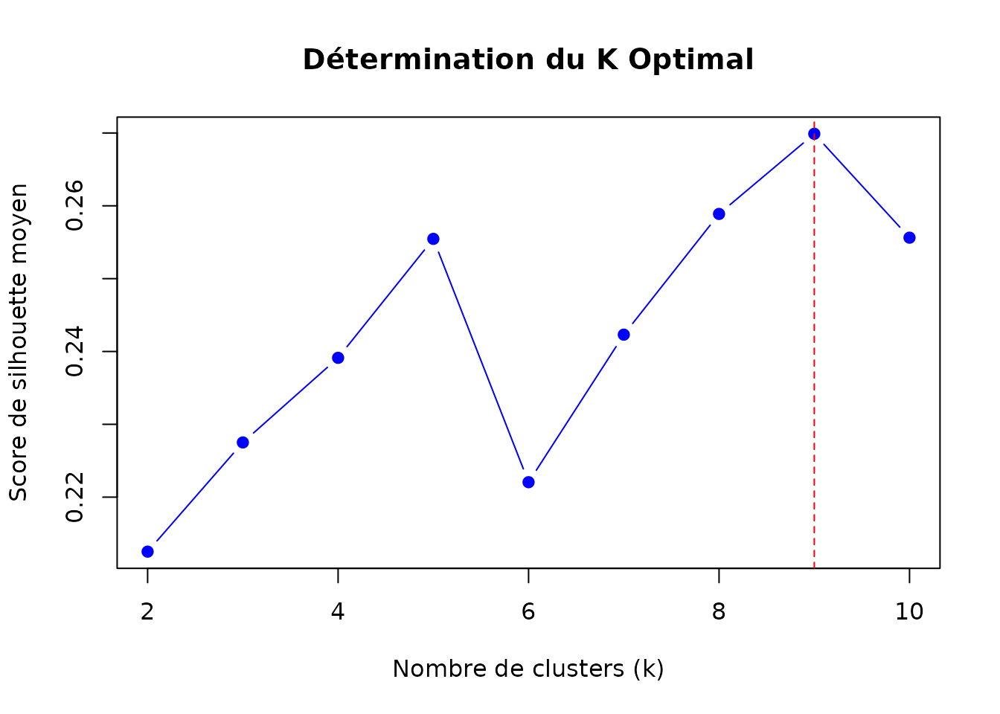
Clustering Hiérarchique
Alternative au K-means utilisant la méthode de Ward :
# Clustering hiérarchique
result_hclust <- cluster_parcels(
massif_demo_units_extended,
families = c("family_C", "family_B", "family_P", "family_S"),
k = 3,
method = "hierarchical"
)
# Comparer avec K-means
comparison <- data.frame(
kmeans = result_kmeans$cluster,
hierarchical = result_hclust$cluster
)
table(comparison)
#> hierarchical
#> kmeans 1 2 3
#> 1 5 3 0
#> 2 0 1 3
#> 3 0 8 0Interprétation des Clusters
# Analyser les profils des clusters
profiles_kmeans <- attr(result_kmeans, "cluster_profile")
# Identifier les caractéristiques de chaque cluster
for (i in 1:nrow(profiles_kmeans)) {
cat("\n=== Cluster", i, "===\n")
cat("Carbone (C):", round(profiles_kmeans[i, "family_C"], 2), "\n")
cat("Biodiversité (B):", round(profiles_kmeans[i, "family_B"], 2), "\n")
cat("Production (P):", round(profiles_kmeans[i, "family_P"], 2), "\n")
cat("Social (S):", round(profiles_kmeans[i, "family_S"], 2), "\n")
# Interprétation
if (profiles_kmeans[i, "family_B"] > 0.7 && profiles_kmeans[i, "family_C"] > 0.7) {
cat("→ Type: Haute conservation\n")
} else if (profiles_kmeans[i, "family_P"] > 0.7) {
cat("→ Type: Production intensive\n")
} else if (profiles_kmeans[i, "family_S"] > 0.7) {
cat("→ Type: Usage récréatif\n")
} else {
cat("→ Type: Usage mixte/équilibré\n")
}
}
#>
#> === Cluster 1 ===
#> Carbone (C): 70.65
#> Biodiversité (B): 36.68
#> Production (P): 49.25
#> Social (S): 29.93
#> → Type: Haute conservation
#>
#> === Cluster 2 ===
#> Carbone (C): 32.69
#> Biodiversité (B): 63.34
#> Production (P): 81.13
#> Social (S): 36.32
#> → Type: Haute conservation
#>
#> === Cluster 3 ===
#> Carbone (C): 62
#> Biodiversité (B): 60.79
#> Production (P): 50.53
#> Social (S): 66.01
#> → Type: Haute conservation3. Trade-off Analysis
Visualiser les Compromis
Les trade-off plots révèlent les relations (synergies ou compromis) entre paires de services écosystémiques.
# Trade-off entre Carbone et Biodiversité
plot_tradeoff(
massif_demo_units_extended,
x = "family_C",
y = "family_B",
xlab = "Carbone & Vitalité",
ylab = "Biodiversité",
title = "Trade-off: Carbone vs Biodiversité"
)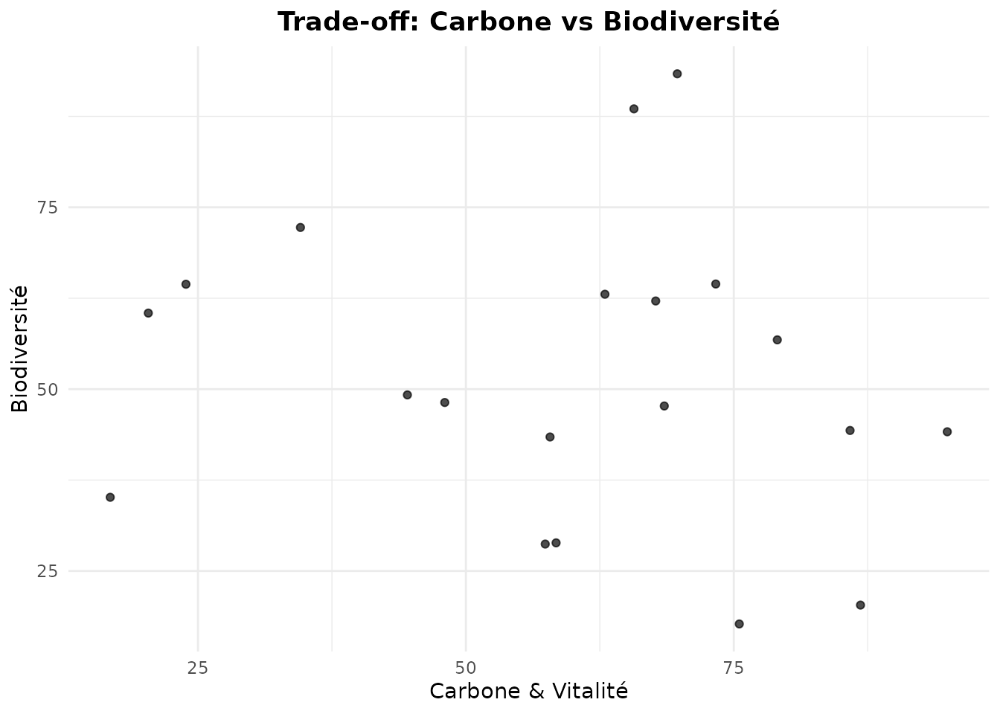
Trade-off avec Dimension Supplémentaire (Couleur)
# Ajouter une 3ème dimension (Production) via la couleur
plot_tradeoff(
massif_demo_units_extended,
x = "family_C",
y = "family_B",
color = "family_P",
xlab = "Carbone",
ylab = "Biodiversité",
title = "Trade-off C-B (coloré par Production)"
)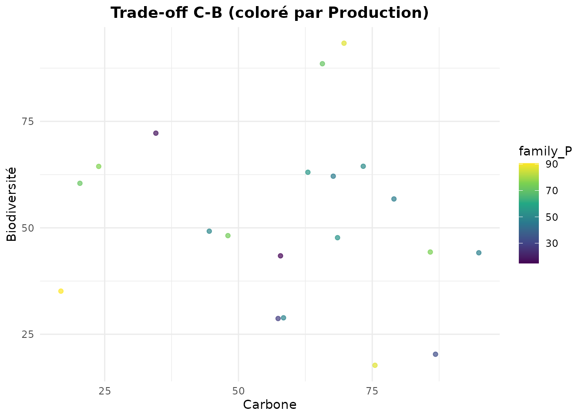
Overlay de la Frontière de Pareto
Combiner trade-off plot avec l’analyse de Pareto pour identifier visuellement les meilleures solutions :
# D'abord identifier les parcelles Pareto-optimales
pareto_result <- identify_pareto_optimal(
massif_demo_units_extended,
objectives = c("family_C", "family_B"),
maximize = c(TRUE, TRUE)
)
# Puis tracer avec frontière Pareto
plot_tradeoff(
pareto_result,
x = "family_C",
y = "family_B",
pareto_frontier = TRUE,
xlab = "Carbone",
ylab = "Biodiversité",
title = "Trade-off C-B avec Frontière de Pareto"
)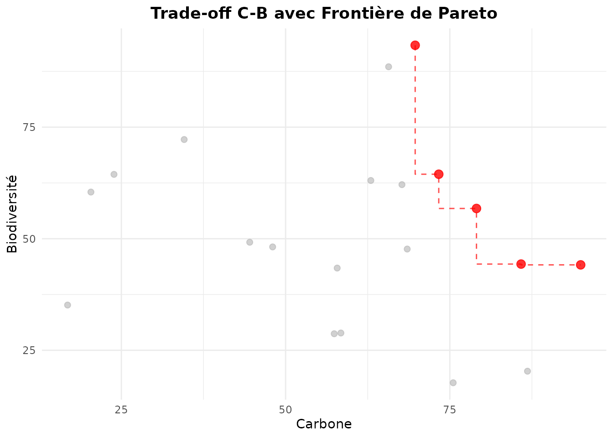
Les points rouges (reliés par la ligne) sont Pareto-optimaux - ils représentent les meilleures combinaisons possibles de C et B.
Matrice de Trade-offs
Analyser plusieurs paires d’objectifs simultanément :
library(patchwork)
# Créer une matrice de trade-off plots
p1 <- plot_tradeoff(massif_demo_units_extended, "family_C", "family_B",
title = "C vs B") + theme(legend.position = "none")
p2 <- plot_tradeoff(massif_demo_units_extended, "family_C", "family_P",
title = "C vs P") + theme(legend.position = "none")
p3 <- plot_tradeoff(massif_demo_units_extended, "family_B", "family_P",
title = "B vs P") + theme(legend.position = "none")
p4 <- plot_tradeoff(massif_demo_units_extended, "family_P", "family_E",
title = "P vs E") + theme(legend.position = "none")
p5 <- plot_tradeoff(massif_demo_units_extended, "family_S", "family_N",
title = "S vs N") + theme(legend.position = "none")
p6 <- plot_tradeoff(massif_demo_units_extended, "family_B", "family_N",
title = "B vs N") + theme(legend.position = "none")
(p1 + p2 + p3) / (p4 + p5 + p6) +
plot_annotation(title = "Matrice de Trade-offs Entre Familles")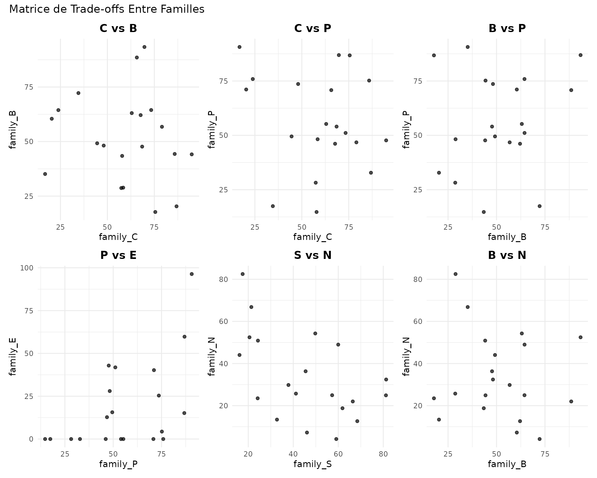
Étiquetage des Parcelles
Identifier des parcelles spécifiques sur le trade-off plot :
# Ajouter des labels pour les parcelles Pareto-optimales
plot_tradeoff(
pareto_result,
x = "family_C",
y = "family_B",
pareto_frontier = TRUE,
label = "name", # Afficher les noms
xlab = "Carbone",
ylab = "Biodiversité",
title = "Parcelles Identifiées sur la Frontière de Pareto"
)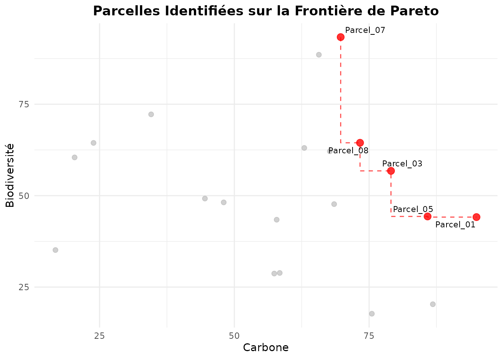
4. Cas d’Usage: Sélection de Parcelles pour Conservation
Objectif
Identifier les 5 meilleures parcelles pour un projet de conservation intégrale maximisant simultanément la biodiversité, le carbone, et la naturalité.
# Étape 1: Analyse de Pareto sur les 3 objectifs
conservation_pareto <- identify_pareto_optimal(
massif_demo_units_extended,
objectives = c("family_B", "family_C", "family_N"),
maximize = c(TRUE, TRUE, TRUE)
)
# Combien de parcelles Pareto-optimales ?
n_optimal <- sum(conservation_pareto$is_optimal)
cat("Nombre de parcelles Pareto-optimales:", n_optimal, "\n")
#> Nombre de parcelles Pareto-optimales: 8
# Étape 2: Classer les parcelles Pareto-optimales par score composite
conservation_subset <- conservation_pareto |>
filter(is_optimal) |>
mutate(composite_score = (family_B + family_C + family_N) / 3) |>
arrange(desc(composite_score))
# Top 5 parcelles
top5 <- head(conservation_subset, 5)
top5 |>
sf::st_drop_geometry() |>
select(name, family_B, family_C, family_N, composite_score)
#> name family_B family_C family_N composite_score
#> 1 Parcel_07 93.35580 69.72693 52.46156 71.84810
#> 2 Parcel_01 44.14061 94.92197 50.88637 63.31632
#> 3 Parcel_08 64.45627 73.31753 48.98929 62.25436
#> 4 Parcel_18 63.04992 62.97529 54.28779 60.10433
#> 5 Parcel_04 28.87016 58.41750 82.49126 56.59298Visualisation de la Sélection
# Cartographier les 5 parcelles sélectionnées
conservation_pareto <- conservation_pareto |>
mutate(
selected = name %in% top5$name
)
ggplot(conservation_pareto) +
geom_sf(aes(fill = selected), color = "white", size = 0.5) +
scale_fill_manual(
values = c("gray80", "darkgreen"),
labels = c("Non sélectionné", "Top 5 Conservation"),
name = "Statut"
) +
labs(title = "Sélection de 5 Parcelles pour Conservation Intégrale") +
theme_minimal()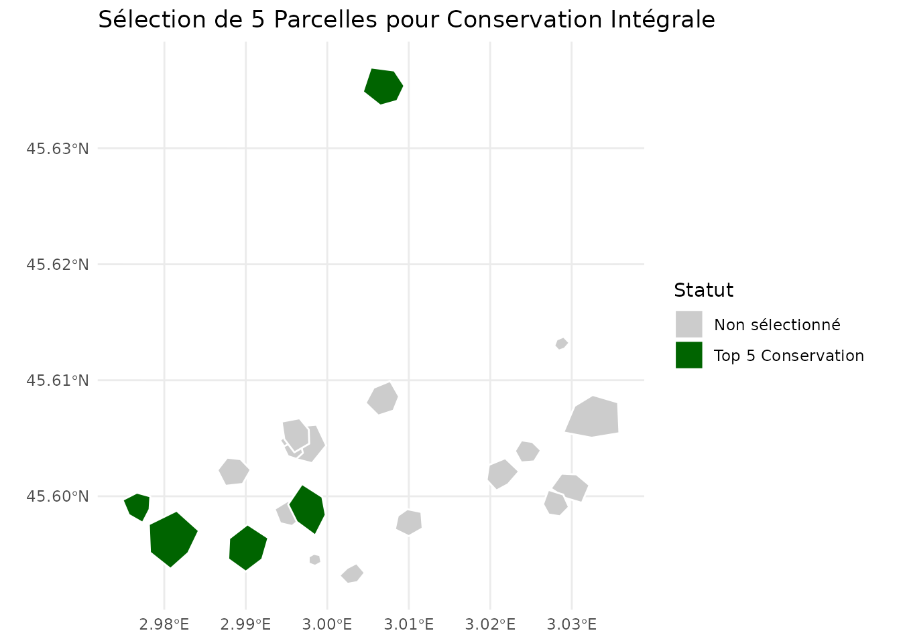
Trade-off Plot de la Sélection
# Visualiser les parcelles sélectionnées sur le trade-off B-C
plot_tradeoff(
conservation_pareto,
x = "family_B",
y = "family_C",
color = "family_N",
size = "family_N",
xlab = "Biodiversité",
ylab = "Carbone",
title = "Sélection Conservation (taille/couleur = Naturalité)"
)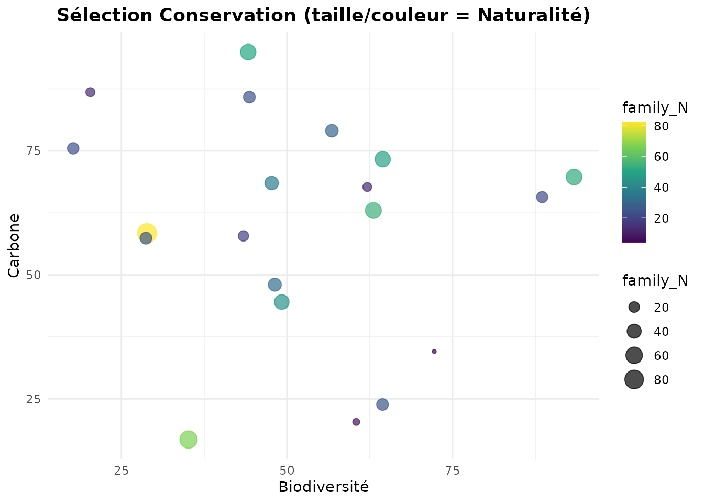
5. Cas d’Usage: Zonage Multifonctionnel
Objectif
Créer un zonage de 4 types de gestion basé sur les profils multi-familles des parcelles.
# Clustering sur 8 familles représentatives
zonage <- cluster_parcels(
massif_demo_units_extended,
families = c("family_C", "family_B", "family_W", "family_N", # Conservation
"family_P", "family_E", # Production
"family_S", "family_A"), # Social
k = 4,
method = "kmeans"
)
# Profils des zones
profiles_zonage <- attr(zonage, "cluster_profile")
print(profiles_zonage)
#> family_C family_B family_W family_N family_P family_E family_S family_A
#> 1 35.63441 62.98255 49.48810 42.18054 82.87250 65.451418 29.33653 74.05585
#> 2 57.75064 63.41323 43.62682 28.05449 58.17645 8.948895 65.43480 42.88935
#> 3 77.27847 48.11494 12.60870 33.16677 36.40858 18.554559 41.34474 42.24662
#> 4 65.20213 32.08343 53.14786 37.58738 49.92845 9.802700 29.53996 65.46039
# Attribuer des noms de zones selon les profils
zonage <- zonage |>
mutate(
zone_name = case_when(
cluster == 1 ~ "Conservation intégrale",
cluster == 2 ~ "Production durable",
cluster == 3 ~ "Usage récréatif",
cluster == 4 ~ "Gestion mixte",
TRUE ~ paste("Zone", cluster)
)
)
table(zonage$zone_name)
#>
#> Conservation intégrale Gestion mixte Production durable
#> 3 6 8
#> Usage récréatif
#> 3Carte du Zonage
ggplot(zonage) +
geom_sf(aes(fill = zone_name), color = "white", size = 0.8) +
scale_fill_viridis_d(name = "Type de Gestion") +
labs(title = "Zonage Multifonctionnel Basé sur Clustering") +
theme_minimal() +
theme(legend.position = "bottom")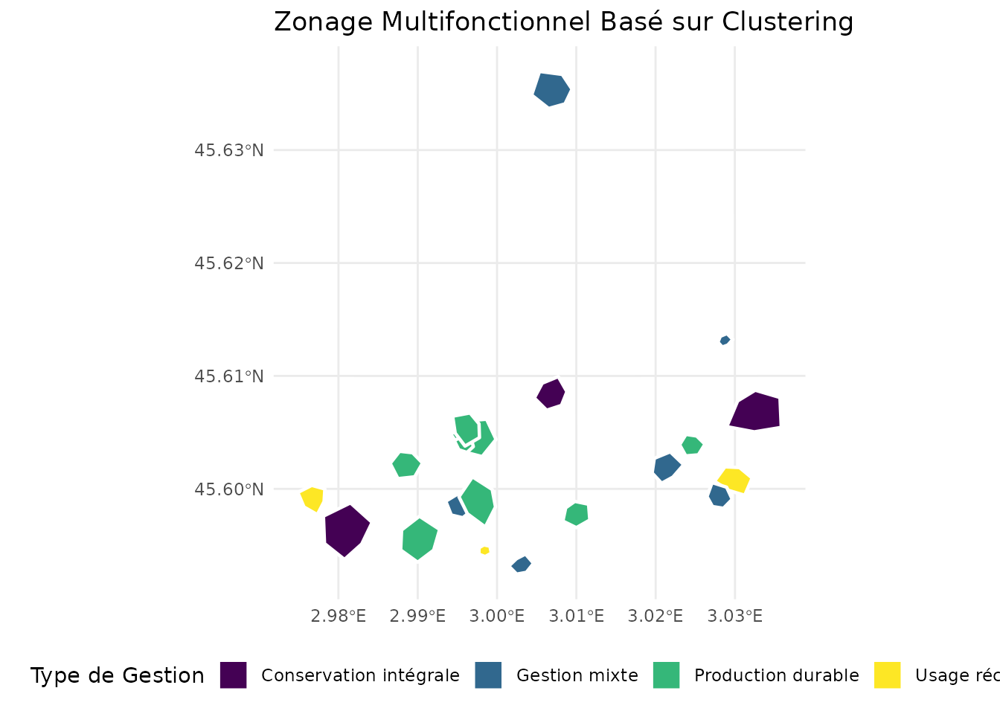
Statistiques par Zone
# Résumer les caractéristiques de chaque zone
zonage |>
sf::st_drop_geometry() |>
group_by(zone_name) |>
summarise(
n_parcelles = n(),
C_mean = mean(family_C, na.rm = TRUE),
B_mean = mean(family_B, na.rm = TRUE),
P_mean = mean(family_P, na.rm = TRUE),
S_mean = mean(family_S, na.rm = TRUE),
N_mean = mean(family_N, na.rm = TRUE)
) |>
mutate(across(where(is.numeric), ~ round(., 2)))
#> # A tibble: 4 × 7
#> zone_name n_parcelles C_mean B_mean P_mean S_mean N_mean
#> <chr> <dbl> <dbl> <dbl> <dbl> <dbl> <dbl>
#> 1 Conservation intégrale 3 35.6 63.0 82.9 29.3 42.2
#> 2 Gestion mixte 6 65.2 32.1 49.9 29.5 37.6
#> 3 Production durable 8 57.8 63.4 58.2 65.4 28.0
#> 4 Usage récréatif 3 77.3 48.1 36.4 41.3 33.2Conclusion
Cette vignette a présenté les outils d’optimisation multi-critères du
package nemeton (v0.4.0) :
- Analyse de Pareto : Identifier les solutions non-dominées pour guider les choix de gestion
- Clustering : Créer des typologies de parcelles et des zonages multifonctionnels
- Trade-off Analysis : Visualiser et quantifier les compromis entre services écosystémiques
Ces outils permettent de :
- Objectiver les décisions de gestion forestière avec une approche scientifique rigoureuse
- Communiquer les compromis inévitables entre objectifs conflictuels
- Optimiser l’allocation spatiale des usages forestiers à l’échelle du territoire
- Identifier les parcelles stratégiques pour différents objectifs de gestion
Références
- Obstétar, P. (2025). nemeton: Ecosystem Services Assessment for Forest Management. R package version 0.4.0.
- Miettinen, K. (1998). Nonlinear Multiobjective Optimization. Springer.
- Jain, A. K., Murty, M. N., & Flynn, P. J. (1999). Data clustering: a review. ACM Computing Surveys, 31(3), 264-323.
- Poff, N. L., et al. (2010). The ecological limits of hydrologic alteration. Freshwater Biology, 55(1), 147-170.